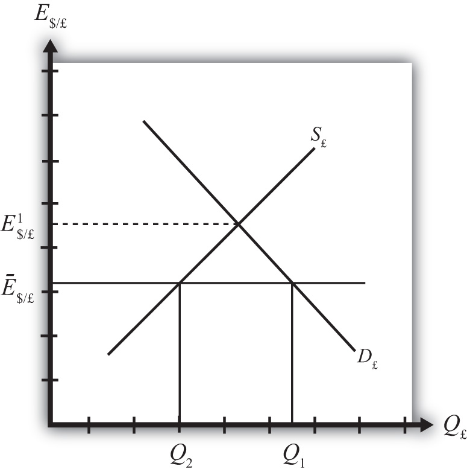

Fixed exchange rates around the world were once the only game in town; however, since the collapse of the Bretton Woods system in 1973, floating exchange rates predominate for the world’s most-traded currencies. Nonetheless, many countries continue to use some variant of fixed exchange rates even today. This chapter addresses both the historical fixed exchange rate systems like the gold standard as well as the more modern variants like crawling pegs and currency boards.
This chapter begins by defining several types of fixed exchange rate systems, including the gold standard, the reserve currency standard, and the gold exchange standard. The price-specie flow mechanismA description about how adjustments to shocks or changes are handled within a pure gold standard system. is described for the gold standard. It continues with other modern fixed exchange variations such as fixing a currency to a basket of several other currencies, crawling pegs, fixing within a band or range of exchange rates, currency boards, and finally the most extreme way to fix a currency: adopting another country’s currency as your own, as is done with dollarizationCurrency fixing by adopting the U.S. dollar as one’s currency. or euroization.
The chapter proceeds with the basic mechanics of a reserve currency standardA currency standard in which all countries fix to one central reserve currency, while the reserve currency is not fixed to anything. in which a country fixes its currency to another’s. In general, a country’s central bank must intervene in the foreign exchange (Forex) markets, buying foreign currency whenever there is excess supply (resulting in a balance of payments surplusThe balance on the balance of payments when the central bank sells domestic currency and buys foreign currency.) and selling foreign currency whenever there is excess demand (resulting in a balance of payments deficitThe balance on the balance of payments when the central bank buys domestic currency and sells foreign reserves.). These actions will achieve the fixed exchange rate version of the interest parity condition in which interest rates are equalized across countries. However, to make central bank actions possible, a country will need to hold a stock of foreign exchange reserves. If a country’s central bank does not intervene in the Forex in a fixed exchange system, black markets are shown to be a likely consequence.
Jeopardy Questions. As in the popular television game show, you are given an answer to a question and you must respond with the question. For example, if the answer is “a tax on imports,” then the correct question is “What is a tariff?”
There are two basic systems that can be used to determine the exchange rate between one country’s currency and another’s: a floating exchange rate system and a fixed exchange rate system.
Under a floating exchange rate system, the value of a country’s currency is determined by the supply and demand for that currency in exchange for another in a private market operated by major international banks.
In contrast, in a fixed exchange rate system, a country’s government announces (or decrees) what its currency will be worth in terms of something else and also sets up the rules of exchange. The “something else” to which a currency value is set and the “rules of exchange” determine the type of fixed exchange rate system, of which there are many. For example, if the government sets its currency value in terms of a fixed weight of gold, then we have a gold standard. If the currency value is set to a fixed amount of another country’s currency, then it is a reserve currency standard.
As we review several ways in which a fixed exchange rate system can work, we will highlight some of the advantages and disadvantages of the system. In anticipation, it is worth noting that one key advantage of fixed exchange rates is the intention to eliminate exchange rate risk, which can greatly enhance international trade and investment. A second key advantage is the discipline a fixed exchange rate system imposes on a country’s monetary authority, with the intention of inducing a much lower inflation rate.
Most people are aware that at one time the world operated under something called a gold standard. Some people today, reflecting back on the periods of rapid growth and prosperity that occurred when the world was on a gold standard, have suggested that the world abandon its current mixture of fixed and floating exchange rate systems and return to this system. (For a discussion of some pros and cons see Alan Greenspan’s remarks on this from the early 1980s.See Alan Greenspan’s remarks in “Can the US Return to a Gold Standard,” Wall Street Journal, September 1, 1981; reprinted online at http://www.gold-eagle.com/greenspan011098.html[0]. See Murray Rothbard’s article for an argument in favor of a return to the gold standard.See Murray Rothbard, “The Case for a Genuine Gold Dollar,” in The Gold Standard: An Austrian Perspective (Lexington, MA: D. C. Heath, 1985), 1–17; also available online at http://www.mises.org/rothbard/genuine.asp.) Whether or not countries seriously consider this in the future, it is instructive to understand the workings of a gold standard, especially since, historically, it is the first major international system of fixed exchange rates.
Most of the world maintained a pure gold standard during the late 1800s and early 1900s, with a major interruption during World War I. Before the enactment of a gold standard, countries were generally using a Bimetallic standardA currency standard using both gold and silver. consisting of both gold and silver.See Angela Radish, “Bimetallism,” Economic History Online at http://www.eh.net/encyclopedia/?article=redish.bimetallism The earliest establishment of a gold standard was in Great Britain in 1821, followed by Australia in 1852 and Canada in 1853. The United States established its gold standard system with the Coinage Act of 1873, sometimes known as “The Crime of ’73.”For more info see Wikipedia, “Coinage Act of 1873,” http://en.wikipedia.org/wiki/Coinage_Act_of_1873. The gold standard was abandoned in the early days of the Great Depression. Britain dropped the standard in 1931, the United States in 1933.
The rules of a gold standard are quite simple. First, a country’s government declares that its issued currency (it may be coin or paper currency) will exchange for a weight in gold. For example, in the United States during the late 1800s and early 1900s, the government set the dollar exchange rate to gold at the rate $20.67 per troy ounce. During the same period, Great Britain set its currency at the rate £4.24 per troy ounce. Second, in a pure gold standard, a country’s government declares that it will freely exchange currency for actual gold at the designated exchange rate. This “rule of exchange” means that anyone can go to the central bank with coin or currency and walk out with pure gold. Conversely, one could also walk in with pure gold and walk out with the equivalent in coin or currency.
Because the government bank must always be prepared to give out gold in exchange for coin and currency on demand, it must maintain a storehouse of gold. That store of gold is referred to as “gold reservesGold held in storage by a central bank, usually to make possible the exchange of currency for gold under a gold standard..” That is, the central bank maintains a reserve of gold so that it can always fulfill its promise of exchange. As discussed in Chapter 22 "Fixed Exchange Rates", Section 22.4 "Central Bank Intervention with Fixed Exchange Rates", a well-functioning system will require that the central bank always have an adequate amount of reserves.
The two simple rules, when maintained, guarantee that the exchange rate between dollars and pounds remains constant. Here’s why.
First, the dollar/pound exchange rate is defined as the ratio of the two-currency-gold exchange rates. Thus
Next, suppose an individual wants to exchange $4.875 for one pound. Following the exchange rules, this person can enter the central bank in the United States and exchange dollars for gold to get
This person can then take the gold into the central bank in the United Kingdom, and assuming no costs of transportation, can exchange the gold into pounds as follows:
Hence, the $4.875 converts to precisely £1 and this will remain the fixed exchange rate between the two currencies, as long as the simple exchange rules are followed. If many countries define the value of their own currency in terms of a weight of gold and agree to exchange gold freely at that rate with all who desire to exchange, then all these countries will have fixed currency exchange rates with respect to each other.
The price-specie flow mechanism is a description about how adjustments to shocks or changes are handled within a pure gold standard system. Although there is some disagreement whether the gold standard functioned as described by this mechanism, the mechanism does fix the basic principles of how a gold standard is supposed to work.
Consider the United States and United Kingdom operating under a pure gold standard. Suppose there is a gold discovery in the United States. This will represent a shock to the system. Under a gold standard, a gold discovery is like digging up money, which is precisely what inspired so many people to rush to California after 1848 to strike it rich.
Once the gold is unearthed, the prospectors bring it into town and proceed to the national bank where it can be exchanged for coin and currency at the prevailing dollar/gold exchange rate. The new currency in circulation represents an increase in the domestic money supply.
Indeed, it is this very transaction that explains the origins of the gold and silver standards in the first place. The original purpose of banks was to store individuals’ precious metal wealth and to provide exchangeable notes that were backed by the gold holdings in the vault. Thus rather than carrying around heavy gold, one could carry lightweight paper money. Before national or central banks were founded, individual commercial banks issued their own currencies, which circulated together with many other bank currencies. However, it was also common for governments to issue coins that were made directly from gold or silver.
Now, once the money supply increases following the gold discovery, it can have two effects: operating through the goods market and financial market. The price-specie flow mechanism describes the adjustment through goods markets.
First, let’s assume that the money increase occurs in an economy that is not growing—that is, with a fixed level of GDP. Also assume that both purchasing power parity (PPP) and interest rate parity (IRP) holds. PPP implies an equalization of the cost of a market basket of goods between the United States and the United Kingdom at the current fixed exchange rate. IRP implies an equalization of the rates of return on comparable assets in the two countries.
As discussed in Chapter 18 "Interest Rate Determination", Section 18.14 "Money Supply and Long-Run Prices", when the U.S. money supply increases, and when there is no subsequent increase in output, the prices of goods and services will begin to rise. This inflationary effect occurs because more money is chasing (i.e., demanding) the same amount of goods and services. As the price level rises in an economy open to international trade, domestic goods become more expensive relative to foreign goods. This will induce domestic residents to increase demand for foreign goods; hence import demand will rise. Foreign consumers will also find domestic goods more expensive, so export supply will fall. The result is a demand for a current account deficit. To make these transactions possible in a gold standard, currency exchange will take place as follows.
U.S. residents wishing to buy cheaper British goods will first exchange dollars for gold at the U.S. central bank. Then they will ship that gold to the United Kingdom to exchange for the pounds that can be used to buy UK goods. As gold moves from the United States to the United Kingdom, the money supply in the United States falls while the money supply in the United Kingdom rises. Less money in the United States will eventually reduce prices, while more money in the United Kingdom will raise prices. This means that the prices of goods will move together until purchasing power parity holds again. Once PPP holds, there is no further incentive for money to move between countries. There will continue to be demand for UK goods by U.S. residents, but this will balance with the United Kingdom demands for similarly priced U.S. goods. Hence, the trade balance reverts to zero.
The adjustment process in the financial market under a gold standard will work through changes in interest rates. When the U.S. money supply rises after the gold discovery, average interest rates will begin to fall. Lower U.S. interest rates will make British assets temporarily more attractive, and U.S. investors will seek to move investments to the United Kingdom. The adjustment under a gold standard is the same as with goods. Investors trade dollars for gold in the United States and move that gold to the United Kingdom where it is exchanged for pounds and used to purchase UK assets. Thus the U.S. money supply will begin to fall, causing an increase in U.S. interest rates, while the UK money supply rises, leading to a decrease in UK interest rates. The interest rates will move together until interest rate parity again holds.
In summary, adjustment under a gold standard involves the flow of gold between countries, resulting in equalization of prices satisfying purchasing power parity (PPP) and/or equalization of rates of return on assets satisfying interest rate parity (IRP) at the current fixed exchange rate. The only requirement for the government to maintain this type of fixed exchange rate system is to maintain the fixed price of its currency in terms of gold and to freely and readily exchange currency for gold on demand.
In a reserve currency system, another country’s currency takes the role that gold played in a gold standard. In other words a country fixes its own currency value to a unit of another country’s currency. For example, suppose Britain decided to fix its currency to the dollar at the exchange rate E$/£ = 1.50. To maintain this fixed exchange rate, the Bank of England would stand ready to exchange pounds for dollars (or dollars for pounds) on demand at the specified exchange rate. To accomplish this, the Bank of England would need to hold dollars on reserve in case there was ever any excess demand for dollars in exchange for pounds on the Forex. In the gold standard, the central bank held gold to exchange for its own currency; with a reserve currency standard, it must hold a stock of the reserve currency. Always, the reserve currency is the currency to which the country fixes.
A reserve currency standard is the typical method for fixing a currency today. Most countries that fix its exchange rate will fix to a currency that either is prominently used in international transactions or is the currency of a major trading partner. Thus many countries fixing their exchange rate today fix to the U.S. dollar because it is the most widely traded currency internationally. Alternatively, fourteen African countries that were former French colonies had established the CFA franc zone and fixed the CFA franc (current currency used by these African countries) to the French franc. Since 1999, the CFA franc has been fixed to the euro. Namibia, Lesotho, and Swaziland are all a part of the common monetary area (CMA) and fix their currency to the South African rand.
A gold exchange standardWhen all countries fix to one central reserve currency, while the reserve currency is fixed to gold. is a mixed system consisting of a cross between a reserve currency standard and a gold standard. In general, it includes the following two rules:
One key difference in this system from a gold standard is that the reserve country does not agree to exchange gold for currency with the general public, only with other central banks.
The system works exactly like a reserve currency system from the perspective of the nonreserve countries. However, if over time the nonreserve countries accumulate the reserve currency, they can demand exchange for gold from the reserve country central bank. In this case, gold reserves will flow away from the reserve currency country.
The fixed exchange rate system set up after World War II was a gold exchange standard, as was the system that prevailed between 1920 and the early 1930s. The post–World War II system was agreed to by the allied countries at a conference in Bretton Woods, New Hampshire, in the United States in June 1944. As a result, the exchange rate system after the war also became known as the Bretton Woods systemThe fixed exchange rate system (using a gold exchange standard) set up after World War II and lasting until 1973..
Also proposed at Bretton Woods was the establishment of an international institution to help regulate the fixed exchange rate system. This institution was the International Monetary Fund (IMF)The international organization created after World War II to oversee the Bretton Woods system of fixed exchange rates.. The IMF’s main mission was to help maintain the stability of the Bretton Woods fixed exchange rate system.
Countries that have several important trading partners, or who fear that one currency may be too volatile over an extended period, have chosen to fix their currency to a basket of several other currencies. This means fixing to a weighted average of several currencies. This method is best understood by considering the creation of a composite currency. Consider the following hypothetical example: a new unit of money consisting of 1 euro, 100 Japanese yen, and one U.S. dollar. Call this new unit a Eur-yen-dol. A country could now fix its currency to one Eur-yen-dol. The country would then need to maintain reserves in one or more of the three currencies to satisfy excess demand or supply of its currency on the Forex.
A better example of a composite currency is found in the SDR. SDR stands for special drawing rightsA composite currency created by the International Monetary Fund (IMF), used only for transactions between central banks.. It is a composite currency created by the International Monetary Fund (IMF). One SDR now consists of a fixed quantity of U.S. dollars, euros, Japanese yen, and British pounds. For more info on the SDR see the IMF factsheet.International Monetary Fund, About the IMF, Factsheet, “Special Drawing Rights (SDRs),” http://www.imf.org/external/np/exr/facts/sdr.htm[0]. Now Saudi Arabia officially fixes its currency to the SDR. Botswana fixes to a basket consisting of the SDR and the South African rand.
A crawling peg refers to a system in which a country fixes its exchange rate but also changes the fixed rate at periodic or regular intervals. Central bank interventions in the Forex may occur to maintain the temporary fixed rate. However, central banks can avoid interventions and save reserves by adjusting the fixed rate instead. Since crawling pegs are adjusted gradually, they can help eliminate some exchange rate volatility without fully constraining the central bank with a fixed rate. In 2010 Bolivia, China, Ethiopia, and Nicaragua were among several countries maintaining a crawling peg.
In this system, a country specifies a central exchange rate together with a percentage allowable deviation, expressed as plus or minus some percentage. For example, Denmark, an EU member country, does not yet use the euro but participates in the Exchange Rate Mechanism (ERM2). Under this system, Denmark sets its central exchange rate to 7.46038 krona per euro and allows fluctuations of the exchange rate within a 2.25 percent band. This means the krona can fluctuate from a low of 7.63 kr/€ to a high of 7.29 kr/€. (Recall that the krona is at a high with the smaller exchange rate value since the kr/euro rate represents the euro value.) If the market determined floating exchange rate rises above or falls below the bands, the Danish central bank must intervene in the Forex. Otherwise, the exchange rate is allowed to fluctuate freely.
As of 2010, Slovenia, Syria, and Tonga were fixing their currencies within a band.
A currency board is a legislated method to provide greater assurances that an exchange rate fixed to a reserve currency will indeed remain fixed. In this system, the government requires that domestic currency is always exchangeable for the specific reserve at the fixed exchange rate. The central bank authorities are stripped of all discretion in the Forex interventions in this system. As a result, they must maintain sufficient foreign reserves to keep the system intact.
In 2010 Bulgaria, Hong Kong, Estonia, and Lithuania were among the countries using a currency board arrangement. Argentina used a currency board system from 1991 until 2002. The currency board was very effective in reducing inflation in Argentina during the 1990s. However, the collapse of the exchange rate system and the economy in 2002 demonstrated that currency boards are not a panacea.
The most extreme and convincing method for a country to fix its exchange rate is to give up one’s national currency and adopt the currency of another country. In creating the euro-zone among twelve of the European Union (EU) countries, these European nations have given up their own national currencies and have adopted the currency issued by the European Central Bank. This is a case of euroization. Since all twelve countries now share the euro as a common currency, their exchange rates are effectively fixed to each other at a 1:1 ratio. As other countries in the EU join the common currency, they too will be forever fixing their exchange rate to the euro. (Note, however, that although all countries that use the euro are fixed to each other, the euro itself floats with respect to external currencies such as the U.S. dollar.)
Other examples of adopting another currency as one’s own are the countries of Panama, Ecuador, and El Salvador. These countries have all chosen to adopt the U.S. dollar as their national currency of circulation. Thus they have chosen the most extreme method of assuring a fixed exchange rate. These are examples of dollarization.
Jeopardy Questions. As in the popular television game show, you are given an answer to a question and you must respond with the question. For example, if the answer is “a tax on imports,” then the correct question is “What is a tariff?”
Use the IMF’s “De Facto Classification of Exchange Rate Regimes and Monetary Policy Frameworks” at http://www.imf.org/external/np/mfd/er/2008/eng/0408.htm to answer the following questions:
One of the main differences between a fixed exchange rate system and a floating system is that under fixed exchange rates the central bank will have to “do something” periodically. In contrast, in a floating system, the central bank can just sit back and watch since it has no responsibility for the value of the exchange rate. In a pure float, the exchange rate is determined entirely by private transactions.
However, in a fixed exchange rate system, the central bank will need to intervene in the foreign exchange market, perhaps daily, if it wishes to maintain the credibility of the exchange rate.
We’ll use the AA-DD model to explain why. Although the AA-DD model was created under the assumption of a floating exchange rate, we can reinterpret the model in light of a fixed exchange rate assumption. This means we must look closely at the interest rate parity condition, which represents the equilibrium condition in the foreign exchange market.
Recall that the AA-DD model assumes the exchange rate is determined as a result of investor incentives to maximize their rate of return on investments. The model ignores the potential effect of importers and exporters on the exchange rate value. That is, the model does not presume that purchasing power parity holds. As such, the model describes a world economy that is very open to international capital flows and international borrowing and lending. This is a reasonable representation of the world in the early twenty-first century, but would not be the best characterization of the world in the mid-1900s when capital restrictions were more common. Nonetheless, the requisite behavior of central banks under fixed exchange rates would not differ substantially under either assumption.
When investors seek the greatest rate of return on their investments internationally, we saw that the exchange rate will adjust until interest rate parity holds. Consider interest rate parity (IRP) for a particular investment comparison between the United States and the United Kingdom. IRP means that RoR$ = RoR£. We can write this equality out in its complete form to get
where the left-hand side is the U.S. interest rate and the right side is the more complicated rate of return formula for a UK deposit with interest rate i£. (See Chapter 15 "Foreign Exchange Markets and Rates of Return" and Chapter 16 "Interest Rate Parity" for the derivation of the interest rate parity condition.) The last term on the right represents the expected appreciation (if positive) or depreciation (if negative) of the pound value with respect to the U.S. dollar.
In a floating exchange rate system, the value of this term is based on investor expectations about the future exchange rate as embodied in the term E$/£e, which determines the degree to which investors believe the exchange rate will change over their investment period.
If these same investors were operating in a fixed exchange rate system, however, and if they believed the fixed exchange rate would indeed remain fixed, then the investors’ expected exchange rate should be set equal to the current fixed spot exchange rate. In other words, under credible fixed exchange rates, E$/£e = E$/£. Investors should not expect the exchange rate to change from its current fixed value. (We will consider a case in which the investors’ expected exchange rate does not equal the fixed spot rate in Chapter 23 "Policy Effects with Fixed Exchange Rates", Section 23.6 "Currency Crises and Capital Flight".)
With E$/£e = E$/£, the right side of the above expression becomes zero, and the interest rate parity condition under fixed exchange rates becomes
i$ = i£.Thus for interest rate parity to hold in a fixed exchange rate system, the interest rates between two countries must be equal.
Indeed, the reason this condition in a floating system is called “interest rate parity” rather than “rate of return parity” is because of our history with fixed exchange rates. Before 1973, most of the world had maintained fixed exchange rates for most of the time. We can see now that under fixed exchange rates, rates of return in each country are simply the interest rates on individual deposits. In other words, in a fixed system, which is what most countries had through much of their histories, interest rate parity means the equality of interest rates. When the fixed exchange rate system collapsed, economists and others continued to use the now-outdated terminology: interest rate parity. Inertia in language usage is why the traditional term continues to be applied (somewhat inappropriately) even today.
Jeopardy Questions. As in the popular television game show, you are given an answer to a question and you must respond with the question. For example, if the answer is “a tax on imports,” then the correct question is “What is a tariff?”
In a fixed exchange rate system, most of the transactions of one currency for another will take place in the private market among individuals, businesses, and international banks. However, by fixing the exchange rate the government would have declared illegal any transactions that do not occur at the announced rate. However, it is very unlikely that the announced fixed exchange rate will at all times equalize private demand for foreign currency with private supply. In a floating exchange rate system, the exchange rate adjusts to maintain the supply and demand balance. In a fixed exchange rate system, it becomes the responsibility of the central bank to maintain this balance.
The central bank can intervene in the private foreign exchange (Forex) market whenever needed by acting as a buyer and seller of currency of last resort. To see how this works, consider the following example.
Suppose the United States establishes a fixed exchange rate to the British pound at the rate Ē$/£. In Figure 22.1 "Central Bank Intervention to Maintain a Fixed Exchange Rate", we depict an initial private market Forex equilibrium in which the supply of pounds (S£) equals demand (D£) at the fixed exchange rate (Ē$/£). But suppose, for some unspecified reason, the demand for pounds on the private Forex rises one day to D′£.
Figure 22.1 Central Bank Intervention to Maintain a Fixed Exchange Rate

At the fixed exchange rate (Ē$/£), private market demand for pounds is now Q2, whereas supply of pounds is Q1. This means there is excess demand for pounds in exchange for U.S. dollars on the private Forex.
To maintain a credible fixed exchange rate, the U.S. central bank would immediately satisfy the excess demand by supplying additional pounds to the Forex market. That is, it sells pounds and buys dollars on the private Forex. This would cause a shift of the pound supply curve from S£ to S′£. In this way, the equilibrium exchange rate is automatically maintained at the fixed level.
Alternatively, consider Figure 22.2 "Another Central Bank Intervention to Maintain a Fixed Exchange Rate", in which again the supply of pounds (S£) equals demand (D£) at the fixed exchange rate (Ē$/£). Now suppose, for some unspecified reason, the demand for pounds on the private Forex falls one day to D′£. At the fixed exchange rate (Ē$/£), private market demand for pounds is now Q2, whereas supply of pounds is Q1. This means there is excess supply of pounds in exchange for U.S. dollars on the private Forex.
Figure 22.2 Another Central Bank Intervention to Maintain a Fixed Exchange Rate

In this case, an excess supply of pounds also means an excess demand for dollars in exchange for pounds. The U.S. central bank can satisfy the extra dollar demand by entering the Forex and selling dollars in exchange for pounds. This means it is supplying more dollars and demanding more pounds. This would cause a shift of the pound demand curve from D′£ back to D£. Since this intervention occurs immediately, the equilibrium exchange rate is automatically and always maintained at the fixed level.
Jeopardy Questions. As in the popular television game show, you are given an answer to a question and you must respond with the question. For example, if the answer is “a tax on imports,” then the correct question is “What is a tariff?”
To maintain a fixed exchange rate, the central bank will need to automatically intervene in the private foreign exchange (Forex) by buying or selling domestic currency in exchange for the foreign reserve currency. Clearly, in order for these transactions to be possible, a country’s central bank will need a stock of the foreign reserve currency at the time the fixed exchange rate system begins. Subsequently, if excess demand for foreign currency in some periods is balanced with excess supply in other periods, then falling reserves in some periods (when dollars are bought on the Forex) will be offset with rising reserves in other periods (when dollars are sold in the Forex) and a central bank will be able to maintain the fixed exchange rate. Problems arise, though, if a country begins to run out of foreign reserves. But before discussing that situation, we need to explain some terminology.
When the central bank buys domestic currency and sells the foreign reserve currency in the private Forex, the transaction indicates a balance of payments deficit. Alternatively, when the central bank sells domestic currency and buys foreign currency in the Forex, the transaction indicates a balance of payments surplus.
Central bank transactions are recorded in an account titled official reserve transactionsAccount on the balance of payments used to record all central bank transactions.. It is found in the financial account of the balance of payments. If this account indicates an addition to official reserves over some period, then the country is running a balance of payments surplus. If over some period the official reserve balance is falling, then the country is running a balance of payments deficit. The deficit or surplus terminology arises from the following circumstances.
Suppose a country runs a trade deficit in a fixed exchange rate system. A trade deficit means that demand for imports exceeds foreign demand for our exports. This implies that domestic demand for foreign currency (to buy imports) exceeds foreign demand for domestic currency (to buy our exports). Assuming no additional foreign demands for domestic currency on the financial account (to keep the exchange rate fixed), the central bank would need to intervene by selling foreign currency in exchange for domestic currency. This would lead to a reduction of foreign reserves and hence a balance of payments deficit. In the absence of transactions on the financial account, to have a trade deficit and a fixed exchange rate implies a balance of payments deficit as well.
More generally, a balance of payments deficit (surplus) arises whenever there is excess demand for (supply of) foreign currency on the private Forex at the official fixed exchange rate. To satisfy the excess demand (excess supply), the central bank will automatically intervene on the Forex and sell (buy) foreign reserves. Thus by tracking sales or purchases of foreign reserves in the official reserve account, we can determine if the country has a balance of payments deficit or surplus.
Note that in a floating exchange rate system, a central bank can intervene in the private Forex to push the exchange rate up or down. Thus official reserve transactions can show rising or falling foreign reserves and hence suggest a balance of payments deficit or surplus in a floating exchange system. However, it is not strictly proper to describe a country with floating exchange rates as having a balance of payment deficit or surplus. The reason is that interventions are not necessary in a floating exchange rate. In a floating system, an imbalance between supply and demand in the private Forex is relieved by a change in the exchange rate. Thus there need never be an imbalance in the balance of payments in a floating system.
Jeopardy Questions. As in the popular television game show, you are given an answer to a question and you must respond with the question. For example, if the answer is “a tax on imports,” then the correct question is “What is a tariff?”
Till now we have said that a central bank must intervene in the foreign exchange (Forex) market whenever there is excess demand or supply of foreign currency. However, we might consider what would happen if the central bank did not intervene. Surely the government could simply mandate that all Forex transactions take place at the official fixed rate and implement severe penalties if anyone is caught trading at a different rate. A black market arises, however, when exchanges for foreign currency take place at an unofficial (or illegal) exchange rate.
Let’s consider why a black market may arise. Suppose the United States fixes its exchange rate to the British pound at the rate Ē$/£. This is indicated in Figure 22.3 "Conditions for a Black Market" as a horizontal line drawn at Ē$/£. Suppose further that demand for pounds (Q1) on the private Forex exceeds supply (Q2) at the official fixed exchange rate, but the central bank does not intervene to correct the imbalance. In this case, suppliers of pounds will come to the market with Q2 quantity of pounds, but many people who would like to buy pounds will not find a willing supplier. Those individuals and businesses demanding the excess (Q1 − Q2) will leave the market empty-handed. Now if this were a one-time occurrence, the unsatisfied demand might be fulfilled in later days when excess supply of pounds comes to the market. However, a more likely scenario is that this unsatisfied demand persists for a long period. With each passing day of unsatisfied demand, total unsatisfied demand grows insidiously.
Figure 22.3 Conditions for a Black Market
Together with the excess demand is a willingness to pay more than the official rate to obtain currency. Since the market equilibrium rate is at E$/£1, excess demanders would be willing to pay more dollars to obtain a pound than is required in the official market. The willingness to pay more creates a profit-making possibility. Suppose an individual or business obtains pounds, perhaps by selling goods in Britain and being paid in foreign currency. This person could convert the pounds for dollars at the official rate or, if he or she wants to make more money, could trade the currency “unofficially” at a higher exchange rate. The only problem is finding someone willing to buy the pounds at the unofficial rate. This turns out rarely to be a problem. Wherever black markets develop, unofficial traders find each other on street corners, at hotels, and even within banks.
Thus a central bank doesn’t absolutely need to intervene in the Forex market in a fixed exchange rate system. However, if it does not, a black market will very likely arise and the central bank will lose control of the exchange rate. One main purpose of fixed exchange rates, namely the certainty of knowing what the currency will exchange for, is also lost since traders will have to decide whether to trade officially or unofficially. Furthermore, the black market exchange rate typically rises and falls with changes in supply and demand, thus one is never sure what that rate will be.
In light of the potential for black markets to arise, if a government wishes to maintain a credible fixed exchange rate, regular intervention to eliminate excess demand or supply of foreign currency is indeed required.
Jeopardy Questions. As in the popular television game show, you are given an answer to a question and you must respond with the question. For example, if the answer is “a tax on imports,” then the correct question is “What is a tariff?”